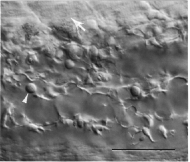

Modified from: Kimmel et al., 1955. Developmental Dynamics 203:253-310. Copyright © 1995 Wiley-Liss, Inc. Reprinted only by permission of Wiley-Liss, a subsidiary of John Wiley & Sons, Inc.
Fig. 38. Refractile tail reticular cells line sinusoids that make up the wall of the developing caudal vein. Left side Nomarski view, dorsal to the top, anterior to the left at the prim-15 stage (30 h). The tail reticular cells have a specialized branching morphology and also appear functionally specialized, relative to other endothelial cells, in their ability to rapidly clear particulate material from the circulating blood by phagocytosis. Three red blood cells (one indicated by the arrowhead) are in view in the sinusoids, and can be distinguished from the reticular cells by their spherical shapes. The ventral parts of tail myotomes are visible just at the top of the field (arrow). Scale bar: 50 µm.

Figure 38